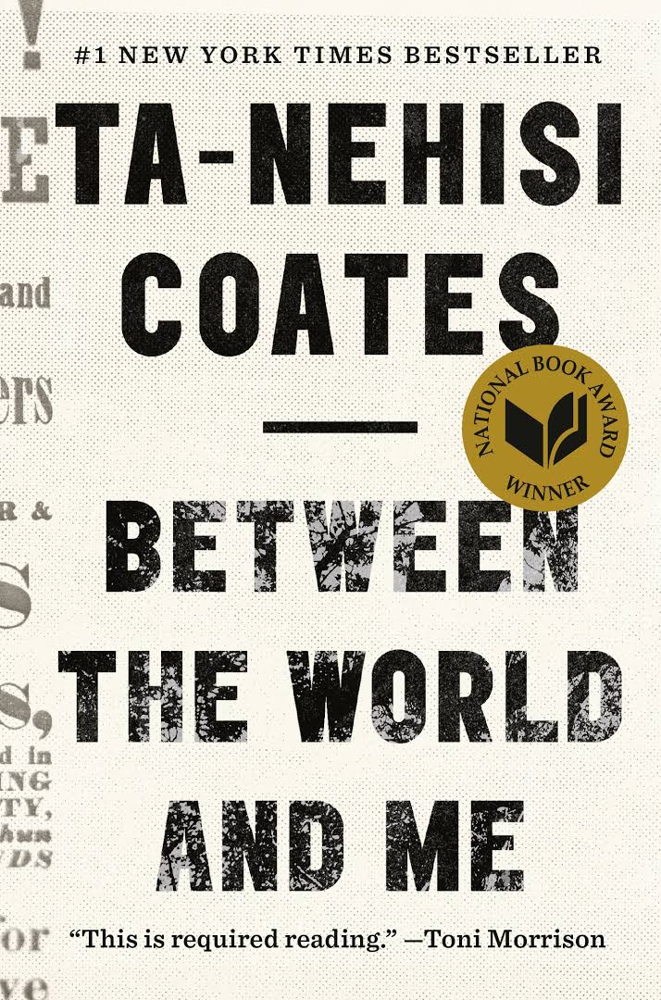
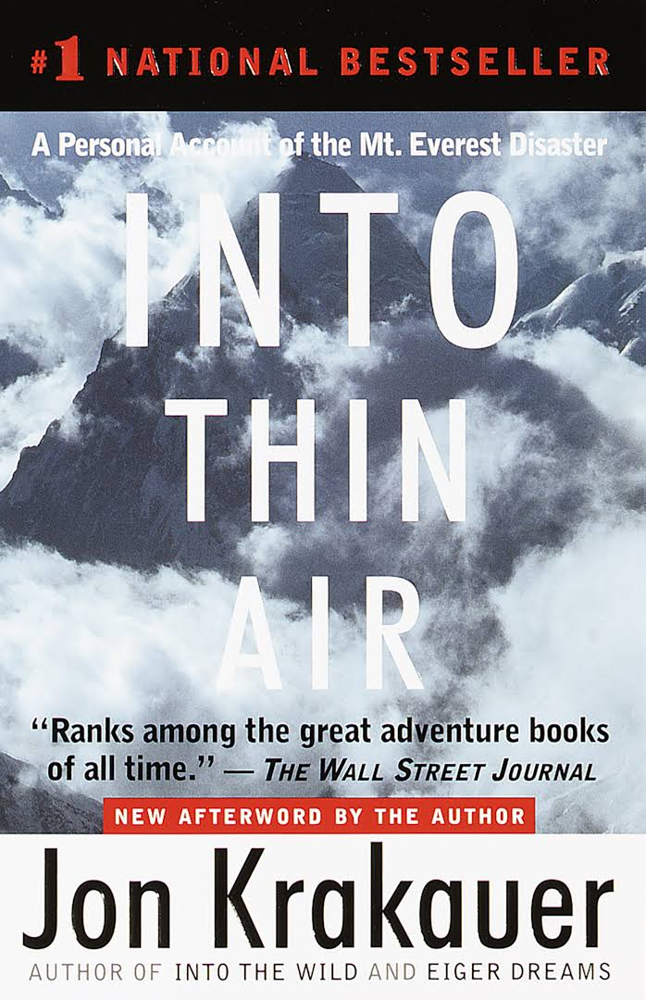
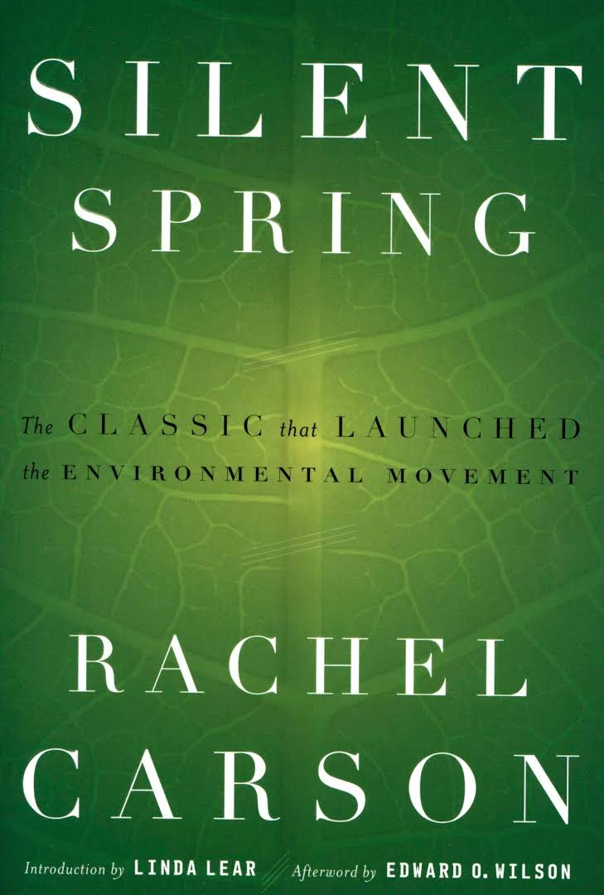

Sapiens: A Brief History of Humankind (Hebrew: קיצור תולדות האנושות, [Ḳitsur toldot ha-enoshut]) is a book by Yuval Noah Harari, first published in Hebrew in Israel in 2011 based on a series of lectures Harari taught at The Hebrew University of Jerusalem, and in English in 2014.[1][2] The book, focusing on Homo sapiens, surveys the history of humankind, starting from the Stone Age and going up to the twenty-first century. The account is situated within a framework that intersects the natural sciences with the social sciences.

Between the World and Me is a 2015 nonfiction book written by American author Ta-Nehisi Coates and published by Spiegel & Grau. It was written by Coates as a letter to his then-teenage son about his perception of what the feelings, symbolism, and realities associated with being Black in the United States are. Coates recapitulates American history and explains to his son "racist violence that has been woven into American culture." Coates draws from an abridged, autobiographical account of his youth in Baltimore, detailing his beliefs about what are the ways in which, to him, institutions like schools, the local police, and even "the streets" discipline, endanger, and threaten to "disembody" black men and women.

Into Thin Air: A Personal Account of the Mt. Everest Disaster is a 1997 bestselling nonfiction book written by Jon Krakauer.[1] It details Krakauer's experience in the 1996 Mount Everest disaster, in which eight climbers were killed and several others were stranded by a storm. Krakauer's expedition was led by guide Rob Hall. Other groups were trying to summit on the same day, including one led by Scott Fischer, whose guiding agency, Mountain Madness, was perceived as a competitor to Hall's agency, Adventure Consultants.

Silent Spring is an environmental science book by Rachel Carson. Published on September 27, 1962, the book documented the environmental harm caused by the indiscriminate use of pesticides. Carson accused the chemical industry of spreading disinformation, and public officials of accepting the industry's marketing claims unquestioningly.